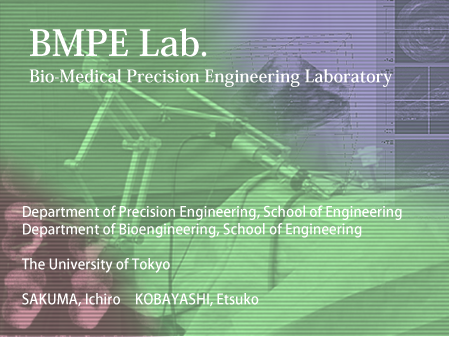

What's New |
|
'17/6/15 Update "Awards/Press"'» Awards/Press '17/5/16 Update "Awards/Press"'» Awards/Press '17/4/07 Update "Members"' '16/12/20 Prof.Sakuma was choosen as fellow of International Academy of Medical and Biological Engineering (IAMBE)» Awards/Press '16/10/25 Prof. Nakagawa won the FY2016 NF foundation award » Awards/Press '16/08/22 Mr. Tomii's paper was chosen as the Featured articles of IEEE Transaction on Biomedical Engineering. '16/05/31 Prof. Nakagawa won the technical development award » Awards/Press '16/03/01 Update "Members" '15/10/01 Update "Members" '15/04/02 Update "Members" '15/01/27 "STAMP" was selected as the most exciting achievements of ultra-high-speed optical field in 2014! STAMP this laboratory-born Nakagawa tackled as doctoral thesis in Optics in 2014 was featured as a Motion Picture Femtophotography! Optical Society (OSA), it is summarized as feature articles of Optics & Photonics News a remarkable paper of each field every year, this is, 30 peer-reviewed papers have been selected by the total from all areas of more than 200 nominations is the result. Please see the the bottom of the following link. Optics in 2014, Optics & Photonics News highlights the most exciting peer-reviewed optics research to have emerged over the past 12 months. >Motion Picture Femtophotography '14/11/27 Update "Awards" '14/10/09 Update "Awards/Members" '14/06/09 Update "Members" '13/11/26 Mr. Monden won the excellent paper award » Awards/Press »more |